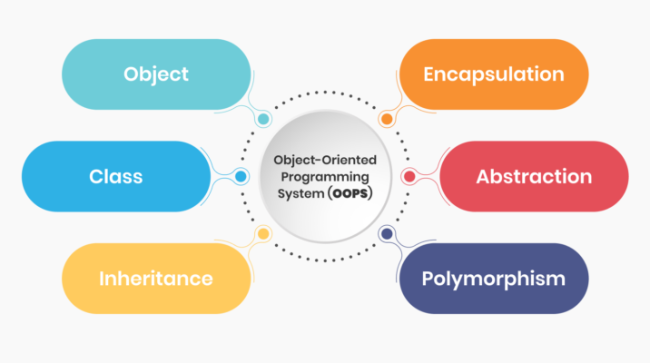
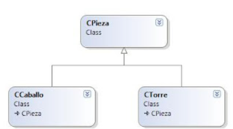
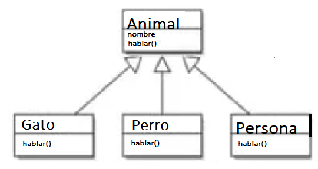
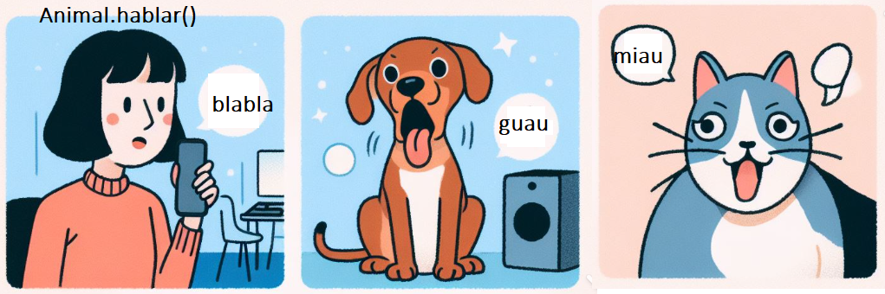
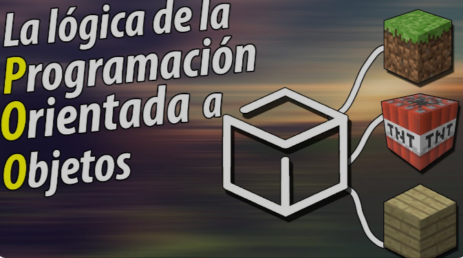
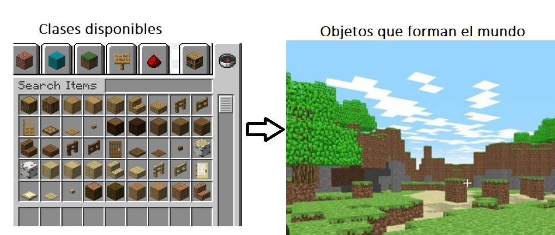

💾 Introducción a la programación orientada a objetos¶
La programación modular es un paradigma que consiste en dividir un programa en módulos con el fin de hacerlo más legible y manejable. Enfatiza este concepto mediante la construcción de aplicaciones a partir de su división en componentes independientes que llevan a cabo tareas concretas.
Al aplicar programación modular, un problema complejo debe ser dividido en otros subproblemas más simples aún.
Un módulo es cada una de las partes de un programa que resuelve uno de los subproblemas.
La programación orientada a objetos (POO) se basa en la programación modular, aunque supone una ruptura respecto a ésta al introducir el concepto de objeto, lo que supone un gran avance en términos de modularización y reutilización de código.
Fundamentos de la POO¶

- Abstracción: es el pilar de la POO, un principio por el cual se aísla toda aquella información que no resulta relevante a un determinado nivel de conocimiento. Consiste en captar las características esenciales de un objeto, así como su comportamiento.
Por ejemplo, todos los animales mamíferos, los englobamos en el grupo mamífero. Las personas en un sistema educativo distinguimos por un lado los profesores y por otro los alumnos pero en un sistema de gestión de un restaurante, las personas son empleados y clientes. En el argot de la POO esto son clases
- Encapsulación: se centra en ocultar la complejidad de la clase. Significa proteger a los miembros de una clase de un acceso ilegal o no autorizado.
- Herencia: es el pilar más fuerte que asegura la reutilización de código. Permite la definición de nuevas clases a partir de otras ya existentes.


- Polimorfismo: posibilita que una misma operación pueda realizar tareas diferentes, dependiendo del tipo de objeto sobre el cual se ha invocado.

Ejemplo¶
En un juego como Minecraft, en los que se utilizan bloques para construir un mundo, los bloques de diferente tipo tienen muchas características comunes, como que son apilables, tienen las mismas dimensiones, posición en el mundo...pero pueden tener diferentes texturas o se comportan diferente al tocarlo el personaje (algunos pueden explotar).
De esta forma, mediante la POO podemos crear una clase base con las características comunes(dimensión, posición en el mundo, acción_dibujar) y crear clases que hereden de la base con sus características individuales(potencia_explosión, soporte...) y reescribir aquellas acciones que lo personalizan, como puede ser accion_dibujar en la que cada tipo de bloque se dibujará de forma diferente, por lo que cada clase tendrá que describir como hacerlo.

Concepto de objeto¶
Entonces, ¿qué es un objeto? Al igual que en el mundo real, un objeto es cualquier cosa. Un objeto puede ser una cosa física, como un coche, o una cosa mental, como una idea. Puede ser algo natural, como un animal, o algo artificial hecho por el hombre, como un cajero automático. Un programa que administra un cajero automático involucraría cuentas bancarias y objetos de cliente. Un programa de ajedrez involucraría un objeto tablero y objetos piezas de ajedrez.
Otro ejemplo puedes ser el juego de Minecraft, podemos tener una clase por cada tipo de elemento de construcción, y en el momento que añadimos un bloque al mundo que estamos creando un objeto de ese tipo. Tendremos por ejemplo una clase "bloque césped" y tantos objetos césped como haya añadido el jugador

Atributos y acciones¶
Atributos¶
Al igual que con los objetos reales, los objetos de nuestros programas tienen ciertos atributos o propiedades característicos. Por ejemplo, un objeto de cajero automático tendría una cantidad actual de efectivo que podría dispensar. Un objeto pieza ajedrez puede tener un par de atributos de fila y columna que especifiquen su posición en el tablero de ajedrez. Observe que los atributos de un objeto son en sí mismos objetos. El atributo de efectivo del cajero automático y los atributos de fila y columna de la pieza de ajedrez son números.
A veces nos referimos a la colección de atributos y valores de un objeto como su estado.
Acciones o Métodos¶
Además de sus atributos o propiedades, los objetos también tienen acciones o comportamientos característicos. Como ya dijimos, los objetos en los programas son dinámicos. Hacen cosas o les hacen cosas.
Por ejemplo, en un programa de ajedrez, ChessPieces tiene la capacidad de moveTo () a una nueva posición en el tablero de ajedrez. De manera similar, cuando un cliente presiona el botón "Saldo actual" en un cajero automático, esto le está diciendo al cajero automático que informe () el saldo bancario actual del cliente. (Observe cómo usamos paréntesis para distinguir acciones de objetos y atributos).
Las acciones asociadas con un objeto se pueden utilizar para enviar mensajes a los objetos y recuperar información de los objetos. Un mensaje es el paso de información o datos de un objeto a otro. En este ejemplo, le decimos a peón1: Pieza de ajedrez que se mueva a (3,4).
chessPiece.move(3, 4);
Los números 3 y 4 en este caso son argumentos que le dicen al peón a qué casilla moverse. (Un tablero de ajedrez tiene 8 filas y 8 columnas y cada cuadrado se identifica por sus coordenadas de fila y columna). En general, un argumento es un valor de datos que especializa el contenido de un mensaje de alguna manera.
Responder a un mensaje o realizar una acción a veces provoca un cambio en el estado de un objeto. Por ejemplo, después de realizar moveTo (3,4), el peón estará en una casilla diferente. Su posición habrá cambiado.
Por otro lado, algunos mensajes (o acciones) no modifican el estado del objeto. Informar el saldo de la cuenta bancaria del cliente no cambia el saldo.
Características básicas¶
- Estado: está representado por atributos de un objeto.
- Comportamiento: se representa mediante métodos de un objeto. También refleja la respuesta de un objeto con otros objetos.
- Identidad: le da un nombre único a un objeto y permite que un objeto interactúe con otros objetos.
Creación y destrucción de objetos¶
Creación¶
Para crear un objeto utilizamos la palabra reservada new, que asigna memoria del Heap. Se usa el nombre de la clase (constructor) seguido por paréntesis. Se le llama instanciar un objeto.
ATM atm = new ATM();
Destrucción¶
En Java no es posible destruir objetos de forma explícita, los objetos se destruyen de forma automática por el recolector de basura. Java busca objetos inalcanzables y los destruye, normalmente cuando falta memoria. Los convierte de nuevo en memoria binaria no utilizada.
Uso de objetos: acceso a atributos y métodos¶
Para acceder a los atributos y métodos de un objeto utilizamos la notación "." detrás del nombre del objeto. El objeto debe ser creado previamente sino dará error de compilación.
double cantidad = atm.efectivo;
atm.mostrarEfectivo();
Más adelante veremos la visibilidad de los métodos y atributos de los objetos.